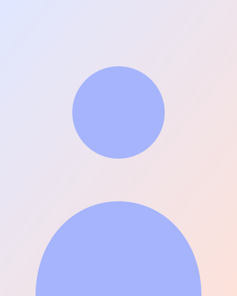

Weby + reklama na Facebooku a Instagramu
Postavím vám web a přivedu na něj zákazníky.
Web i reklamu, která na něj přivede lidi, máte od jednoho člověka. Nemusíte nic koordinovat ani rozumět technice – já se postarám, aby se vám zákazníci ozývali.

+120 %
poptávek
Do 3 týdnů
hotový web
Vše od jednoho člověka